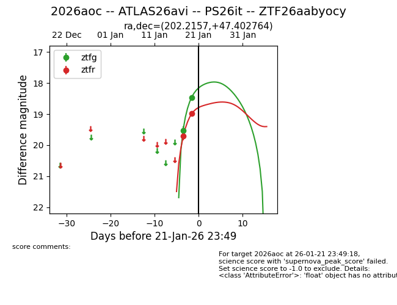
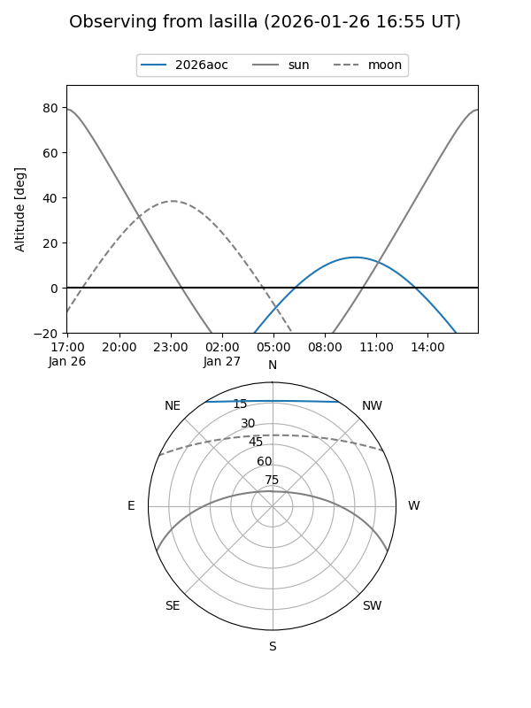
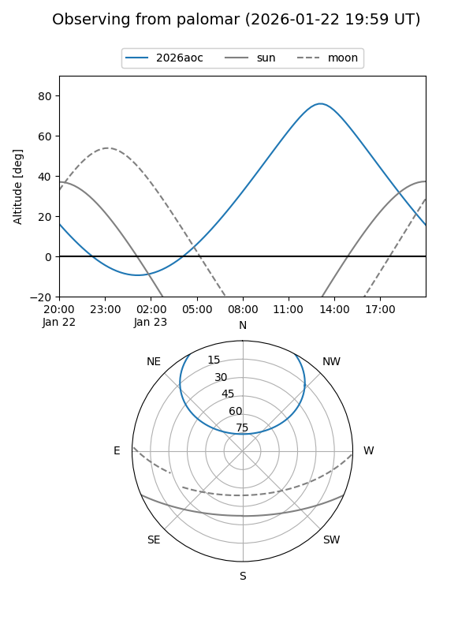
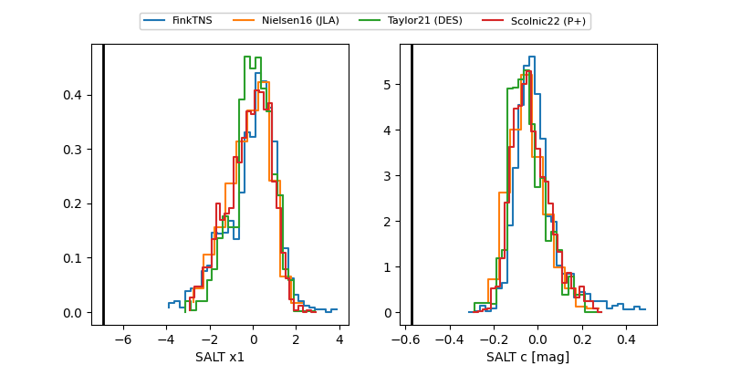

2026aoc
Target 2026aoc at 2026-01-21 10:06
Aliases and brokers:
FINK: link
Lasair: link
ALeRCE: link
TNS: link
YSE: link
alt names
ZTF26aabyocy (ztf,fink_ztf)
2026aoc (tns,yse)
ATLAS26avi (atlas)
PS26it (panstarrs)
Coordinates:
equatorial (ra, dec) = 202.2157,+47.40276
equatorial (HMS+DMS) = 13:28:51.77,+47:24:09.95
galactic (l, b) = (105.5087,+68.43942)
Flags:
Photometry:
last ztfg=18.46, ztfr=18.98
2 ztfg, 2 ztfr detections
Lightcurve

Visibility


Additional plots
